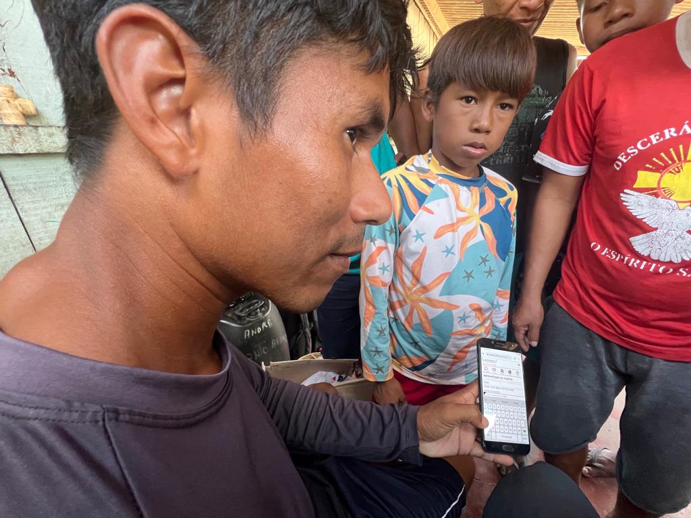

Resources
Guides, manuals and videos to help communities build and run their own communication and energy infrastructure.

Guides, manuals and videos to help communities build and run their own communication and energy infrastructure.